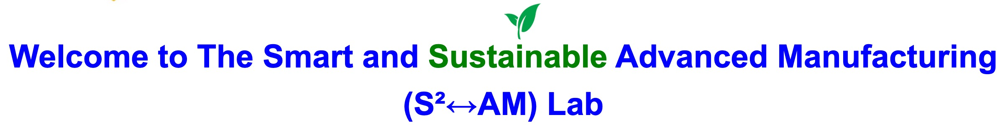

The S²↔︎AM lab is dedicated to harnessing smart technologies for advancing sustainable manufacturing practices. The lab’s current focus is on employing innovative tools such as AI, IoT, and Computational Intelligence to create automated, cost-efficient, and precise decision-making systems for assessing and optimizing the sustainability of manufacturing processes. Another research aspect centers on developing Hybrid Intelligent Systems driven by sustainability. The lab also explores the use of bio-based and biodegradable polymers, alongside Circular Economy principles, within the context of Additive Manufacturing. Additional research interests include utilizing AI tools for the development of advanced materials, thermo-mechanical processing, and composite manufacturing.
The S²↔︎AM lab is an equitable, diverse, and inclusive interdisciplinary research environment. We believe that diversity is a source of strength and innovation. By fostering an environment where Equity, Diversity, and Inclusion (EDI) are prioritized, we enrich our research community by igniting multifaceted creativity and innovation. We believe that research productivity flourishes when EDI is prioritized. We are committed to ensuring that our lab remains an inclusive space where everyone feels safe, respected, valued, and their unique contributions are recognized.
News
- July 2024: Dr. Naser has joined the University of Manitoba as a tenure-track assistant professor.
Research Group Openings
The S²↔︎AM lab is currently seeking highly motivated, and collaborative Ph.D., Master’s, and undergraduate students to join our research group on developing smart sustainable Additive Manufacturing (AM). The successful candidates will gain hands-on experience working with both plastic and metal AM. They will also benefit from direct guidance, competitive stipends, and funding support for their research activities. Ideal candidates are those with strong critical thinking skills, a passion for research challenges, and an enthusiasm for exploring novel ideas. Please refer to the Prospective Students page for more details on how to apply.
About the University of Manitoba: The University of Manitoba is a leading research-intensive institution, ranking 12th among “Canada’s Top 50 Research Universities in 2022” and tied for 13th in the Maclean’s 2023 medical/doctoral rankings. Globally, it places in the top 22% of universities, according to the 2023 Times Higher Education World University Rankings. The Price Faculty of Engineering, the oldest in Western Canada, offers nearly 20 unique programs and is a premier center for engineering research and education in the prairies.

About the City of Winnipeg: The city of Winnipeg is a culturally diverse and vibrant hub known for its rich history, arts scene, and welcoming community. It is home to a wide range of cultural festivals, world-class museums, and a thriving local food scene. The city’s strong sense of community and commitment to inclusivity make it an ideal place for students to live, learn, and grow. With its unique blend of cultural heritage and modern innovation, Winnipeg offers an enriching environment for both academic and personal development.

Contact Information
Address: 66 Chancellors Cir, Winnipeg, MB R3T 2N2.
Office: University of Manitoba (Fort Garry campus), Room E1-410 EITC.
Phone: (+1) 204-474-7876.
Email: a.naser@umanitoba.ca